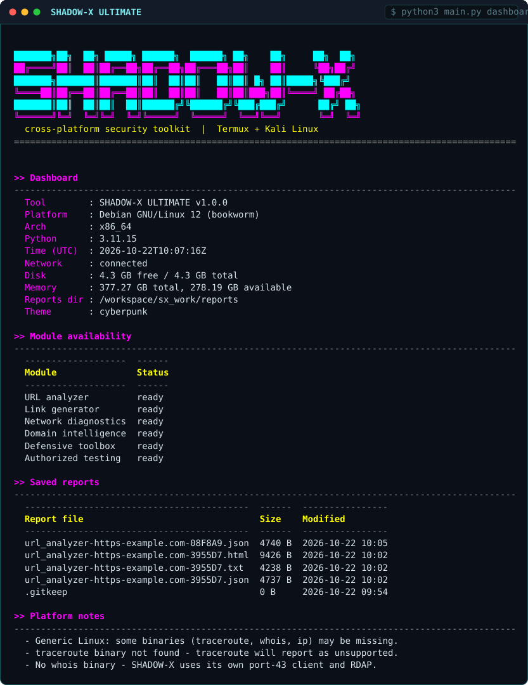
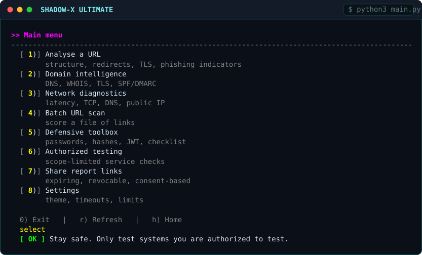
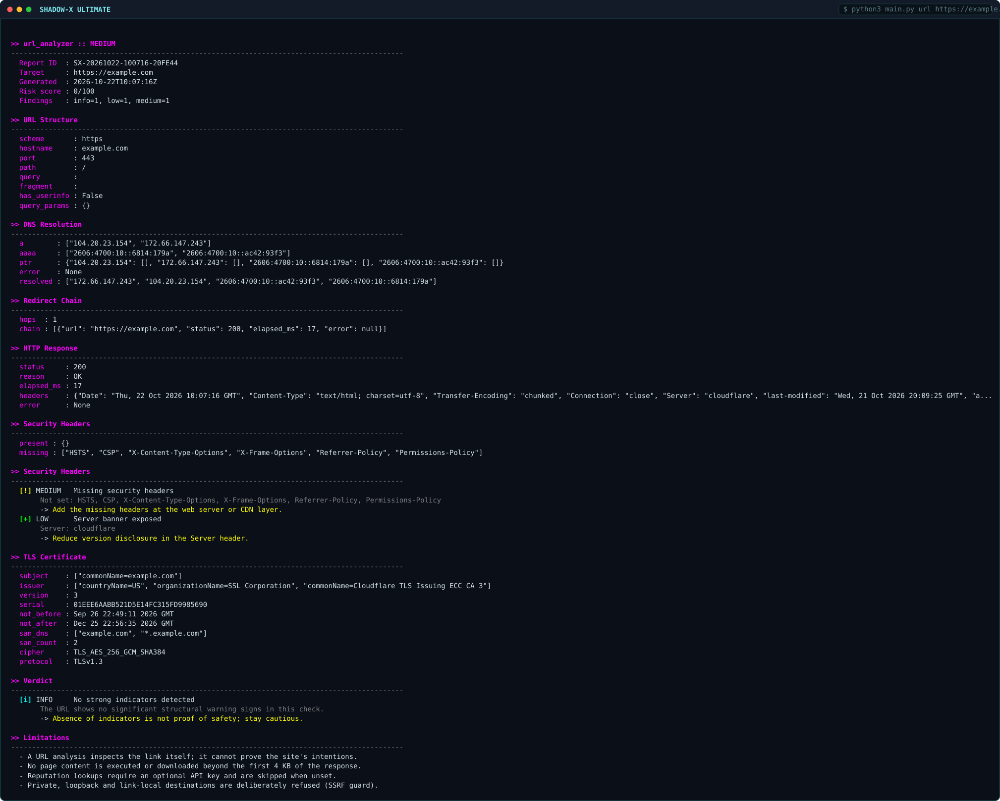
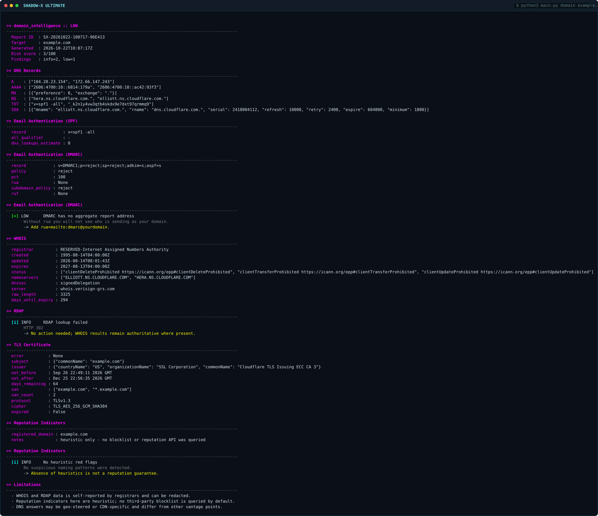
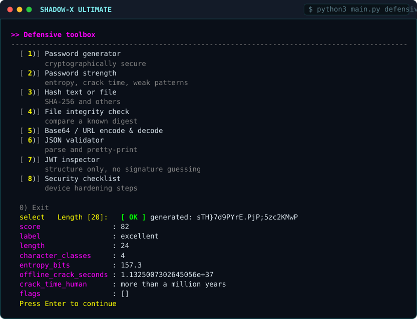

Startup banner & platform detection
The ASCII wordmark and the platform probe. Every capability is listed with a yes/no, including which optional binaries this host lacks — that is how the tool decides what to degrade instead of crashing.
$ python3 main.py platform

Main dashboard
Version, detected OS, Python, live network state, disk and memory, module availability and saved reports — the first thing you see.
$ python3 main.py dashboard

Interactive main menu
The numbered dashboard menu. 0 exits, r refreshes, h returns home; invalid input is rejected without dropping the session.
$ python3 main.py

URL analyzer
Structure, DNS resolution, redirect chain, TLS and the risk score, with per-finding severity badges and remediation notes.
$ python3 main.py url https://example.com

Domain intelligence
A/AAAA/MX/NS/TXT records, WHOIS/RDAP, TLS certificate and SPF/DMARC checks, plus a low-risk finding for a missing DMARC reporting address.
$ python3 main.py domain example.com

Defensive toolbox
Password generator and the strength estimator: entropy in bits, search space, character classes and a human crack-time figure.
$ python3 main.py defensive